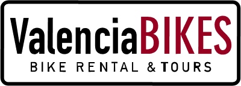
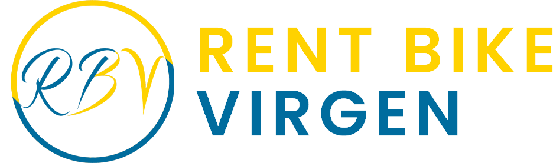
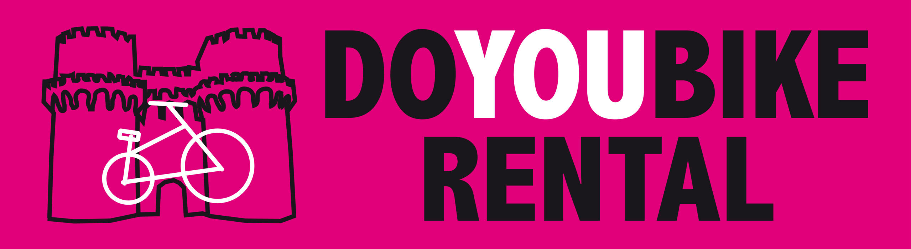

Alquiler de bicisValencia Bikes
Pioneros en el alquiler de bicicletas y rutas guiadas por el centro histórico, Ciudad de las Artes y el Jardín del Turia.
- Bicis urbanas y e-bikes
- Guiado en 5 idiomas
ASCITUR reúne a las principales empresas profesionales de cicloturismo para impulsar una movilidad segura, ecológica y respetuosa con el patrimonio histórico y natural de la Comunidad Valenciana.
ASCITUR (Asociación de Cicloturismo y Turismo Sostenible de Valencia) es la entidad profesional que articula las iniciativas de movilidad turística activa en la región. Trabajamos como interlocutor único ante administraciones públicas, promoviendo la convivencia entre ciclistas, peatones y el transporte urbano. Nuestra misión es garantizar estándares rigurosos de seguridad, fomentar la digitalización del sector y estructurar itinerarios cicloturísticos que pongan en valor la huerta valenciana, el cauce del Turia y el Parque Natural de la Albufera.
ASCITUR entiende que la bicicleta es una herramienta clave dentro del modelo de ciudad sostenible, siempre que su uso turístico se desarrolle bajo criterios de responsabilidad, profesionalidad y respeto al entorno urbano.
Fomentamos la reducción de la huella de carbono mediante vehículos 100% limpios y rutas de bajo impacto.
Generamos alianzas entre comercios locales, instituciones públicas y operadores turísticos regionales.
Promovemos el cumplimiento del código de circulación, el uso del casco y el respeto al peatón.
Mantenimiento riguroso de flotas de bicicletas urbanas, eléctricas, trekking y accesorios infantiles.
Soluciones clave para potenciar el cicloturismo como motor económico sostenible en Valencia.
Desarrollo y señalización de rutas turísticas tematizadas: Ruta de la Huerta, Anillo Verde, Parque Natural de la Albufera y Centro Histórico.
Mesa de diálogo abierta con el Ayuntamiento de Valencia, la Conselleria de Turismo y agentes de movilidad para la defensa del sector.
Campañas de difusión internacional en ferias de turismo activo, plataformas digitales y guías oficiales de la ciudad.
Conoce a los establecimientos y empresas valencianas comprometidas con ofrecer la mejor experiencia en bicicleta.

Alquiler de bicisPioneros en el alquiler de bicicletas y rutas guiadas por el centro histórico, Ciudad de las Artes y el Jardín del Turia.

Alquiler de bicisSituados junto a la Plaza de la Virgen, la mejor opción para comenzar a explorar el casco antiguo de Valencia.
Especialistas en rutas gastronómicas sobre dos ruedas y alquiler de bicicletas de carretera y trekking de alta gama.
Ubicados en el céntrico barrio de Ruzafa, ofrecen atención personalizada y rutas alternativas por barrios emblemáticos.
Soluciones de movilidad urbana flexible con amplia gama de bicicletas y patinetes eléctricos de calidad.
 Alquiler de bicis
Alquiler de bicis
Ubicados en el céntrico barrio de Ruzafa, ofrecen atención personalizada y rutas alternativas por barrios emblemáticos.
 Alquiler de bicis
Alquiler de bicis
Centro integral para el visitante con alquiler de bicicletas, tours guiados y consigna de equipaje.

Alquiler de bicisRed de tiendas y talleres con servicio de alquiler de larga duración para visitantes y residentes en Valencia.
ASCITUR canaliza propuestas operativas entre el tejido empresarial cicloturístico y la administración pública, promoviendo infraestructuras eficientes y ordenadas en Valencia.
Mapeo conjunto de puntos críticos en la red ciclable, ampliación de parkings para bicicletas y regulación del uso del espacio público.
Promoción unificada de la marca Valencia Ciudad Ciclable en el mercado nacional e internacional.
Creación de campañas divulgativas sobre normas de convivencia entre ciclistas, patinetes, vehículos a motor y peatones.
El Plan de Actuaciones 2026 de la Fundación Visit Valencia busca posicionar a Valencia como destino urbano líder del Mediterráneo, gestionando el turismo de forma sostenible y respetando el estilo de vida local.
ASCITUR comparte plenamente esta visión. El alquiler profesional de bicicletas requiere orden, coordinación e información para maximizar los beneficios sociales y minimizar impactos negativos.
ASCITUR se ofrece como un canal de colaboración permanente con el Ayuntamiento de Valencia, las concejalías vinculadas al turismo, deporte, movilidad y seguridad ciudadana, la Fundación Visit Valencia y otras entidades públicas o privadas relacionadas con la gestión turística y urbana.
ASCITUR considera que la colaboración público-privada es esencial para ordenar el crecimiento del cicloturismo, reforzar la seguridad, mejorar la experiencia del visitante y proteger la calidad de vida de los residentes.
Sigue de cerca las últimas novedades sobre la infraestructura ciclable en Valencia, iniciativas de turismo sostenible y consejos para ciclistas.
 Infraestructura
Infraestructura
El nuevo tramo ciclable añade 12 kilómetros segregados que permiten a residentes y turistas recorrer desde el Parque Natural de la Albufera hasta los campos tradicionales de Alboraya sin salir de vías protegidas.
Si representas a una empresa de alquiler de bicicletas, tour operador o negocio vinculado al cicloturismo, escríbenos y forma parte de nuestra red.